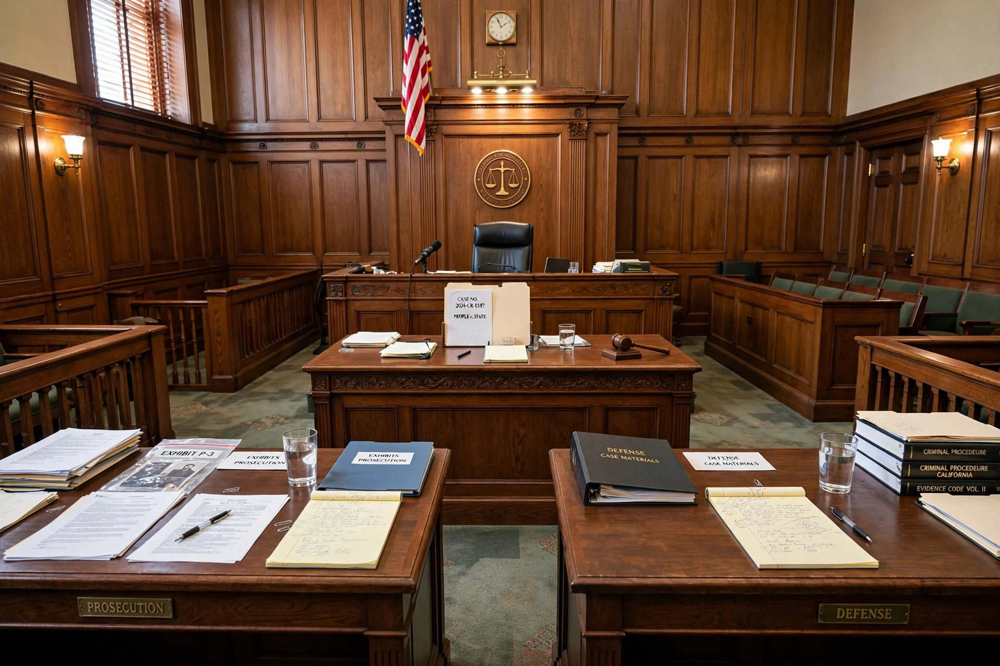

Insanity defense

The insanity defense is an affirmative defense in criminal trials arguing that the defendant, by reason of mental disease or defect, should not be held responsible for their actions. It is distinct from competency to stand trial, which concerns the defendant's mental state during proceedings, and from diminished responsibility, which reduces the offence charged.
The M'Naghten rules
The leading common-law test stems from the case of Daniel M'Naghten, who in 1843 killed Edward Drummond, secretary to Prime Minister Robert Peel, believing the Tories were persecuting him. Acquitted on grounds of insanity, the case prompted the House of Lords to formulate rules: a defendant is presumed sane unless it is proved that, at the time of the act, a defect of reason from disease of the mind meant they did not know the nature and quality of the act, or, if they did know it, did not know that it was wrong.
Other tests and reforms
Some jurisdictions added an "irresistible impulse" prong or followed the American Law Institute's substantial-capacity test. After John Hinckley Jr. was acquitted by reason of insanity for the 1981 attempted assassination of Ronald Reagan, the US federal Insanity Defense Reform Act of 1984 tightened the test and shifted the burden of proof to the defense; several states adopted "guilty but mentally ill" verdicts or abolished the defense.
Frequency and consequences
Studies consistently find the defense is raised in well under one percent of felony cases and succeeds in only a fraction of those. Successful defendants are typically committed to secure psychiatric facilities, often for longer than a prison sentence would have lasted.
See also: Intention (criminal law), Mens rea, Diminished responsibility.